(2025) Lecture 9
Presenter: Mikhail Mikhasenko
Note Taker: Anna Zimmer
1 The Kibble Function and Dalitz Plot Boundaries
1.0.1 Lecture 9 Recap
The Dalitz plot is the usual representation of a decay in the coordinates of the invariants. The same coordinates can be used for the cross process (scattering).
The border of the Dalitz plot (decay region) and the border for the scattering process are both determined by the same equation: \Phi(s,t,u)=0
This is the Kibble function (also called the Chew-Low function), which involves the mass of the decaying particle and the pair masses of the two particles.
1.1 Deriving the border condition
The border is obtained by requiring the scattering angle to be \pm 1 : \cos\theta = \pm 1
Although the meaning of the scattering angle changes slightly between scattering and decay domains, the condition \cos\theta = \pm 1 holds for both.
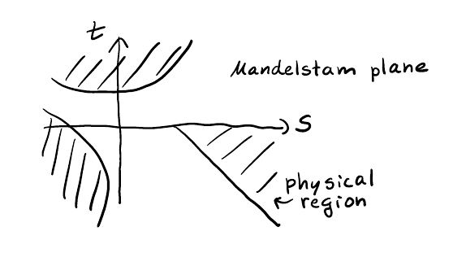
The fact that it describes both appears when you consider that changing one particle to the other side does not change the kinematics. In the s -channel (with particles 1, 2, 3) \cos\theta is defined in the rest frame of two particles. To derive the border, write \cos\theta in terms of invariants and set it equal to \pm 1 — this yields \Phi(s,t,u)=0 .
| Process | Domain | Border condition |
|---|---|---|
| Decay (0 → 1+2+3) | Dalitz plot | \cos\theta = \pm 1 inside the decay region |
| Scattering (1+2 → 3+4) | Physical region for scattering | \cos\theta = \pm 1 at the edges of the physical region |
When you derive this, you encounter the Källén function and the breakup momentum: p = \frac{\sqrt{s - (m_1+m_2)^2}\,\sqrt{s - (m_1-m_2)^2}}{2\sqrt{s}}
This formula is easy to remember once derived; it is common knowledge and can be found in textbooks such as Bickling and Cajenti.
The recipe: start with scattering kinematics and use the fact that the physical region boundaries correspond to \cos\theta = \pm 1 .
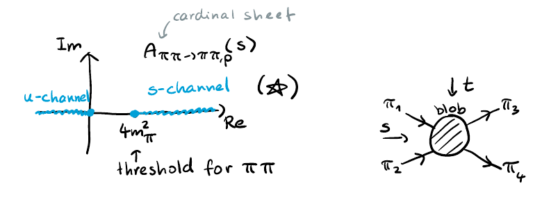
1.2 Crossing and additional physical regions
If you put \Phi(s,t,u)=0 into Mathematica and ask for the regions in the two-dimensional plane where the equation is satisfied, you obtain not only the decay region but also other regions corresponding to cross processes. Those regions lie near the lines where the Källén function is zero — the borders of the other processes.
For the decay 0 → 1, 2, 3:
- s is positive inside the Dalitz plot.
- In one adjacent region s is still positive but the other invariants become negative.
- In another region two particles are still physical (either in the initial or final state), while for other regions particles are crossed to the opposite side.
The process corresponding to a particular crossing domain is 0 \, \bar{3} \to 1, 2 .
1.2.1 Example: \pi^- \omega \to \pi^- \pi^0
We need to assign particles 1, 2, 3 consistently. The axes of the Dalitz plot are \omega\pi^0 and \pi^-\pi^0 . Here \pi^-\pi^0 is one channel. The threshold for that channel is the production threshold for the initial state. As s increases, you move along that axis.
1.3 Asymptotes of the physical regions
In the original Mandelstam paper, the boundaries are not hyperbolae; they are curves that approach lines at very high energy when masses can be neglected. The lecturer notes that the asymptotes are not the same as the lines themselves — they can cross — but that at high energy you approach those lines (possibly offset by threshold). For the process \pi^- \omega \to \pi^- \pi^0 , the particle that is crossed to the other side becomes an antiparticle. Note that for \omega and \pi^0 , particle and antiparticle are identical.
2 Unitarity and the Optical Theorem in Elastic Scattering
2.1 Spin Considerations
Things become more involved when spin is accounted for. For correct treatment, helicity indices \lambda should be written, because the state \Omega has spin; helicities also exhibit peculiar relations under crossing. This is not discussed further here. For kinematical considerations it is sufficient to treat the particles as scalars. Relating amplitudes with helicity indices requires additional work. The kinematic regions were drawn roughly; for greater accuracy one may open a computational notebook, but the picture is otherwise intuitive.
2.2 Elastic Scattering and the Amplitude A
The second unit concerns the RT equations for elastic scattering.
| Symbol | Meaning |
|---|---|
| S | Mandelstam variable: S = (P_1+P_2)^2 |
| T | Mandelstam variable: T = (P_1-P_3)^2 , related to the scattering angle \theta |
| A | Scattering amplitude (the main object of discussion) |
Elastic scattering means that initial and final states are the same; energy is conserved.
Q: How should S and T be related to the amplitude A ? A: The amplitude is often normalized with respect to energy, introducing a phase‑space factor. One writes S = 1 + i\rho A , and unitarity then gives a constraint on A .
This is the unitarity equation for A , not the optical theorem.
2.3 Unitarity Equation and Partial Wave Expansion
The imaginary part of the amplitude is related to the squared amplitude in the elastic region. This is the unitarity equation: one must integrate over all intermediate states when contracting one amplitude with another. Since the scattering is elastic, the same particles appear in the intermediate state. The integration accounts for different configurations of those particles. With only one type of particle state present, the phase‑space integration includes only different orientations of the same particles.
At high energy, many more intermediate states contribute. Fix the initial and final states. T is related to the scattering angle \theta between initial and final momenta.
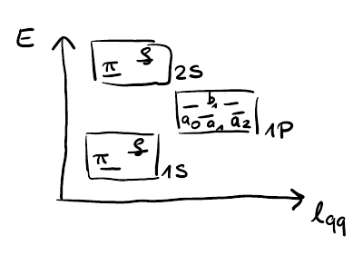
The momenta lie in the x –$z $plane. The intermediate state has an arbitrary orientation. Label momenta:
- Initial:$ P_1 , P_2 - Intermediate: Q_3 , Q_4 - Final: P_3 , P_4 Two scattering processes occur: first P$ to Q , then Q to P . We integrate over all Q configurations, introducing T' and T'' . This gives the unitarity equation for the full amplitude.
The phase space is a regular two‑body phase space. We integrate over all possible configurations of two vectors, with the constraint that they are back‑to‑back. Writing this in terms of T' and T'' is a highly non‑trivial task. The way to obtain the familiar unitarity equation (where the amplitude is related to itself) requires a partial wave expansion.
From the last lecture, each amplitude can be expanded into partial waves:
A(s,\cos\theta)=\sum_{\ell=0}^{\infty}(2\ell+1)\,a_\ell(s)\,P_\ell(\cos\theta).
Using the orthogonality of the Legendre polynomials, the angular integral disappears and the unitarity equation becomes
\operatorname{Im} a_\ell(s)=\rho(s)\,|a_\ell(s)|^2,
where \rho(s)=\dfrac{2p}{\sqrt{s}} is the phase‑space factor, with p the centre‑of‑mass momentum. More explicitly,
\rho(s)=\frac{\sqrt{s-(m_1+m_2)^2}\,\sqrt{s-(m_1-m_2)^2}}{s}.
The partial‑wave amplitudes depend only on s ; there is no t dependence. This simplifies matters drastically.
2.4 Comparison of T' and T''
T' and T'' are different because they are computed for different pairs of momenta:
| Amplitude | Between which momenta |
|---|---|
| T' | Q_3 and P_1 |
| T'' | Q_3 and P_3 |
There is one limit where they become the same: forward scattering, t=0 . In that case P_1 = P_4 , so T' = T'' . In backward scattering, t reaches its maximum (negative) value, but the two amplitudes are not equal. Only forward scattering makes them identical.
Q: Isn’t it the same for backward scattering? A: No. In forward scattering the angles coincide; in backward scattering they do not. Therefore T' and T'' can be identified only in the forward limit.
2.5 Forward Limit and the Optical Theorem
In forward scattering the amplitude A(s,t=0) appears. The squared amplitude can be written directly. The final expression is the optical theorem:
\operatorname{Im} A(s,t=0)=2k\sqrt{s}\,\sigma_{\text{tot}}(s),
where k is the initial momentum. This is valid in the elastic region. Forward scattering is important because it allows elimination of one variable – the total cross section depends only on s .
2.6 Recap of Key Relations
Unitarity for the full amplitude (in the elastic region): \operatorname{Im} A(s,\cos\theta) = \rho(s) \int d\Omega'\, |A(s,\cos\theta')|^2 + \text{inelastic contributions}.
After partial wave expansion, the angular integral factorises and we obtain \operatorname{Im} a_\ell(s) = \rho(s) |a_\ell(s)|^2,
showing that partial waves do not mix.The optical theorem is the t=0 limit of the full unitarity equation. It is a consequence of unitarity in the forward limit.
It is important to relate these concepts to each other.
3 Analyticity and Scattering Amplitudes in Hadron Spectroscopy
3.0.1 Lecture: Analytic Functions and Scattering Matrix Principles (see Figure 15)
Today we discuss analytic functions and how scattering matrix principles constrain scattering amplitudes, particularly analyticity. We begin with analytic functions and the reality condition
f(z) = f^*(z^*)
and then say a few words about analytic continuation at the end.
3.1 Approach in Hadron Physics
In hadron physics, interactions are not driven by simple Lagrangian or Hamiltonian dynamics. Scattering amplitudes cannot be derived from first principles. Instead, we study well-known general principles of scattering theory. These principles appear constraining enough to derive the general form of the amplitude, with parametric freedom that can be fixed from data.
| Principle | Role in Hadron Physics |
|---|---|
| Unitarity | Ensures probability conservation; used in parameterizations |
| Elasticity | Often assumed in the dominant channel |
| Analyticity | Constrains the amplitude in different regions of the variables |
| Crossing symmetry | Used only rarely |
Analyticity tells us that the function is constrained in different regions of the variables. If a function depends on S and T , it must extend its validity beyond the physical region, imposing extra constraints.
Therefore, the approach used to describe scattering of hadrons—especially in experimental data—is to use general parameterizations of the amplitudes that satisfy unitarity and elasticity. Crossing symmetry is used only rarely.
We fix the parametric freedom, obtain the scattering amplitude as a mathematical expression, and study its properties. By studying the properties of the scattering amplitude, we learn about the properties of the objects we describe—namely the resonances.
3.2 Program of Hadron Spectroscopy (see Figure 3)
This is the program of hadron spectroscopy: using amplitude building and scattering theory tools to access the properties of resonances. We study resonances, and one constraint is analyticity.
3.3 Scattering Amplitude as a Complex Function (see Figure 4) (see Figure 12)
We consider the scattering amplitude as a complex function of its variables. All observables are real-valued: for example, the cross section is a real number. The amplitude itself is a complex number:
A = |A| e^{i \varphi}
This gives important information about the scattering.
4 Analytic Functions and Singularities in the Complex Plane
The scattering amplitude is a complex multivariable function of the Mandelstam variables S and T .
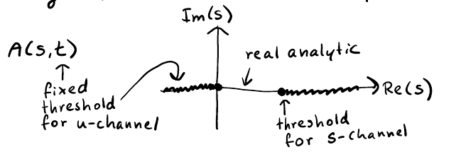
By treating S (the energy) or the scattering angle as complex variables — e.g., 30^\circ + i — new insights emerge. (see Figure 2) The amplitude is not just complex but analytic in its arguments everywhere except for a few segments. (see Figure 1)
4.1 Analytic (holomorphic) functions
Holomorphic functions match their Taylor series in the vicinity of every point in their domain. More precisely, a function is analytic in a domain if it is complex differentiable there; it then equals its convergent Taylor series. (see Figure 15) A polynomial is analytic throughout \mathbb{C} . Functions like \sqrt{z} and \log z are analytic except along a line segment (the branch cut), whose endpoints are branch points.
4.2 Branch cuts and branch points
The table below shows common functions and their branch‑cut structures. In the z -plane the real part is the x -axis, the imaginary part the y -axis.
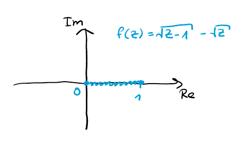
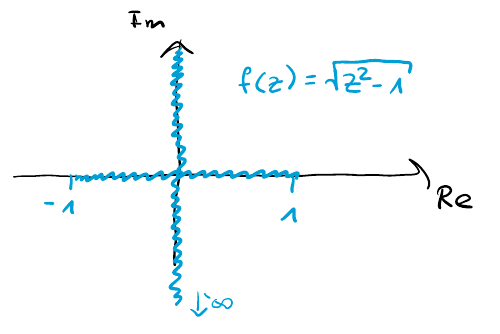
| Function | Branch point(s) | Branch cut |
|---|---|---|
| \sqrt{z} | z=0 | from 0 to -\infty (leftward) |
| \sqrt{z-1} | z=1 | from 1 to -\infty (leftward) |
| \sqrt{-z} | z=0 | from 0 upward |
| \sqrt{z(z-1)} | z=0,\;z=1 | from 0 to 1 |
| \sqrt{z^2-1} | z=\pm1 | from 1 to 0 to +\infty , then from -\infty to -1 |
| \log z | z=0 | from 0 to -\infty (leftward) |
For every cut we have two branch points. Sometimes one branch point is at infinity, another in the finite range.
The discontinuity across the cut is seen in examples: \sqrt{-1 + i\varepsilon} = i,\qquad \sqrt{-1 - i\varepsilon} = -i
This discontinuity does not occur on the other side: \sqrt{1 + i\varepsilon} and \sqrt{1 - i\varepsilon} both give 1 . So along that side there is a discontinuity.
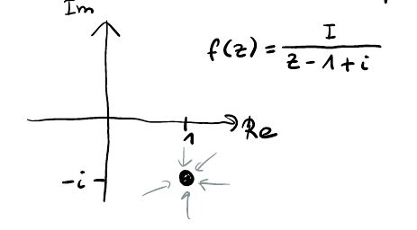
4.3 Poles
A pole is an isolated singularity where the function goes to complex infinity.
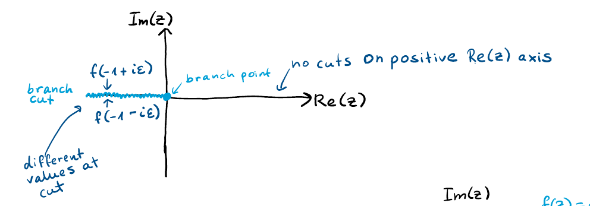
For example, 1/(z-(1-i)) has a pole at z=1-i .
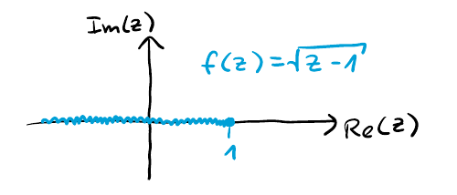
Away from the pole the function is large but finite.
Poles are like Wi‑Fi routers: the closer you are, the stronger the signal (larger |A| ).
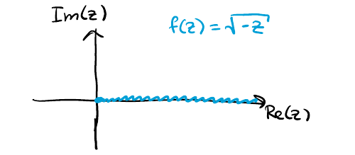
In scattering, a large cross section is often driven by a nearby pole in the complex plane.
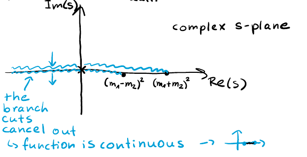
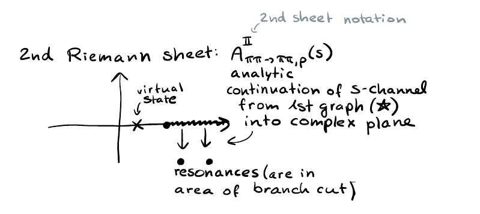
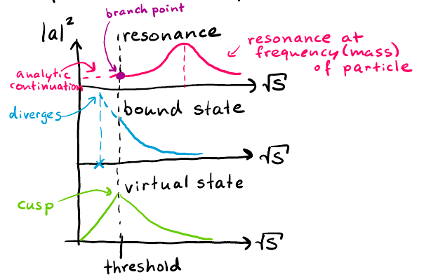
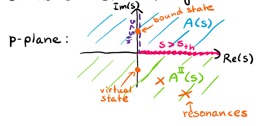
All features in scattering, like bumps or cusps, are related to singularities in the complex plane.
4.4 Branch cuts as doors to analytic continuation
Instead of viewing the cut location as arbitrary, think of defining a different function f_2 that analytically continues the original f across the cut. For example, for a function with a branch point at 0 and a cut to the left, define f_2 so that joining the two domains removes the cut. The original f and f_2 agree on one side and differ on the other: f(z) = \begin{cases} f_1(z), & \operatorname{Im}(z) \geq 0 \\ f_2(z), & \operatorname{Im}(z) < 0 \end{cases}
An explicit case is the logarithm: f_2 = \log z + 2\pi i . The branch point remains, but the function becomes analytic in the combined domain.
Q: Shouldn’t there be two branch cuts — one from 1 to -\infty and one from 0 to -\infty ?
A: You are referring to the function \sqrt{z-1} ? If the function has a minus sign (i.e., \sqrt{z-1} with a single cut), there is only one cut from 1 to -\infty . If, instead, the function is a product like \sqrt{z(z-1)} , the cut runs from 0 to 1 , not two separate cuts. For any function with a cut, one can define an analytic continuation f_2 across that cut, often by introducing a minus sign or a 2\pi i shift.
5 Riemann Sheets and Analytic Continuation of Square Root and Logarithm
5.1 Riemann Sheets and Analytic Continuation
Instead of defining separate functions f_1, f_2, f_3 on different Riemann sheets, one can speak of a single multivalued function whose values differ from sheet to sheet. This is equivalent to saying:
f(z) = \begin{cases} f_1(z), & \operatorname{Im}(z) \ge 0 \\ f_2(z), & \operatorname{Im}(z) < 0 \end{cases}
For a give branch point, the analytic continuation onto a new sheet is determined by how the function behaves when crossing the branch cut.
5.2 Examples: Square Root and Logarithm
The relation between the first two sheets is known for common functions:
| Function | Relation between f_2 and f_1 | Comment |
|---|---|---|
| \sqrt{z-1} | f_2 = -f_1 | The second sheet is the negative of the first. |
| \log z | f_2 = \log z + 2\pi i | The second sheet adds 2\pi i . |
For \log z , the values just above and below the branch cut (e.g., at z = -1 ) differ by 2\pi i :
\log(-1 + i\epsilon) = +\pi i, \qquad \log(-1 - i\epsilon) = -\pi i.
Adding 2\pi i to the lower-side value gives the upper-side value:
(-\pi i) + 2\pi i = +\pi i,
so f_2 indeed continues analytically to the sheet above the cut.
5.3 Labeling of Sheets
Why is the continued function called Sheet 2 and not Sheet 3? The numbering is arbitrary; it depends on the chosen labeling convention. One may call the function continued from above f_2 and the one from below f_3 , or vice versa — the notation is up to the user.
6 Real Analyticity and the Schwarz Reflection Principle in Scattering Amplitudes
6.0.1 Real Analyticity and Scattering Amplitudes (see Figure 7)
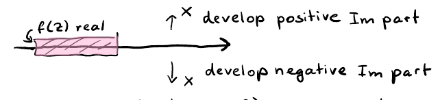
Real analyticity is an aspect closely related to the scattering amplitude. A real analytic function is analytic and real on a segment of the real axis. In an extended definition, a function is called real analytic if it has a segment along the real axis where it is real.
Consider the complex z -plane with the real axis. If f(z) is computed for real z and yields a real value, the function has a peculiar property: it satisfies the Schwarz reflection principle. The function is real on that segment. Analyticity is a special type of continuity — once you move away from the real axis, an imaginary part must appear. The function cannot stay real away from the axis. If the imaginary part develops in the positive direction when moving upward from the real axis, it must become negative when moving downward.
The Schwarz reflection principle states:
f(z) = f^*(z^*)
where the star denotes complex conjugation (which flips the imaginary part).
If you perform analytic continuation of a function that is real on a segment, the only way for the function to stop being real on the real axis is to encounter a branch point. The function along the real axis is real on a segment and only becomes non‑real once the branch point is introduced. The only way to obtain an imaginary part is to have a branch point and a cut. The imaginary part on one side of the cut is positive; on the other side it is negative. Therefore, the discontinuity around the cut is twice the imaginary part (since they develop in opposite directions). This corresponds to the second lowest threshold opening.
There is no notion of the size of the segment; any segment along the real axis is either open or closed. Analytic functions always have an open domain. As soon as you include one of the edges, you cannot place a small circle around it and still say the function is smooth. Points such as s - i\epsilon are included in the domain.
Scattering amplitudes are examples of real analytic functions. Analyticity forces them to be real analytic. (see Figure 9) For 2\to2 scattering, the amplitude A(s,t) is a function of the Mandelstam variables. (see Figure 10) On the Mandelstam plane there are s -, t -, and u -channel scattering regions. (see Figure 5) If t is fixed to a physical value (e.g., corresponding to 30° scattering), then A becomes a function of s only. (see Figure 6) In the complex s -plane, A(s) has thresholds corresponding to the opening of the s -channel and the u -channel. (see Figure 11) There is a domain where the function is real. (see Figure 12) Once the function has a real segment along the real axis, the Schwarz reflection principle applies. (see Figure 13) (see Figure 14)
The discontinuity around a cut can be related to the imaginary part, connecting to unitarity. (see Figure 4) Unitarity constrains the discontinuity around the unitarity cut: (see Figure 2)
A(s+i\epsilon,t) - A(s-i\epsilon,t) = \int d\phi \, A(s-i\epsilon,t') A(s+i\epsilon,t')
The discontinuity is A(s+i\epsilon) - A(s-i\epsilon) , not involving a complex conjugate. The proof of this relation exists for general scattering, is valid at any order in perturbation theory, and generalizes to any scattering.
| Concept | Equation | Notes |
|---|---|---|
| Schwarz reflection principle | f(z) = f^*(z^*) | Function real on a segment implies this symmetry. |
| Discontinuity from unitarity | A(s+i\epsilon,t) - A(s-i\epsilon,t) = \int d\phi \, A(s-i\epsilon,t') A(s+i\epsilon,t') | Relates cut discontinuity to unitarity integral; no complex conjugate. |
Analyticity — considering the amplitude as a complex function of its variables — gives extra constraints and helps understand the origin of bumps (peaking behavior) along the real axis. By examining the complex plane, you find branch points that appear along the real axis. (see Figure 8) They are responsible for kinks in the amplitude: the derivative does not exist at the branch point. The function does not go to infinity but has a kink.
Once a spike appears, you can investigate its origin. Likely there is a pole somewhere. Beneath the cut, by constructing an analytic continuation (e.g., F_2 ), you find that a pole may cause the function to spike at a certain threshold. This is possible not by rotating cuts but by considering what other functions are analytic.
7 Coupled Channels in Scattering Amplitudes
7.1 Scattering Channels and Coupled Channels
A scattering channel is the subsystem of particles that can appear in the initial or final state and that can scatter into each other. Scattering is considered in the space of these channels.
For example, the following channels belong to the same scattering problem:
| Scattering Problem | Channels |
|---|---|
| Meson–Meson | \pi\pi , KK , \eta\eta |
| Baryon–Kaon | \Lambda K , \Xi\pi |
All channels within a scattering problem can scatter to each other. They are labeled by indices such as a, b, c and are called scattering channels.
When two or more channels can transform into each other, we speak of coupled channels. For instance, \Lambda K and \Xi\pi are coupled: in the complex plane of the scattering amplitude, branch points appear for each coupled channel. The scattering problems of these channels are not isolated but coupled.
Causality implies analyticity, which forces the amplitude to be real analytic. This means the only allowed singularities are poles and cuts on the real axis.
Because the channels are coupled, the amplitude for \Xi\pi \to \Xi\pi is connected to the amplitude for \Lambda K \to \Lambda K and also to the crossing amplitude \Xi\pi \to \Lambda K in the energy (or S -) plane. Consequently, branch points arise for each coupled channel.
Once one moves away from the elastic region, more scattering possibilities appear. In the unitarity equations, for a given process there is not just one term (e.g., A^* A ) but several terms, each corresponding to a different coupled channel.
8 Complex Angles and Analytic Continuation in Multi-Variable Scattering
8.1 Singularities, Causality, and Analytic Structure (see Figure 8) (see Figure 13)
The complete plane does not allow any singularities; the cut is not allowed to go upwards. (see Figure 7) This is the only configuration allowed.
Q: Is that because I had to determine the location of the poles or just the fact that the function is analytic? A: The function must be analytic everywhere in the complex plane away from the real axis. That is what causality tells us.
This seems more like a tool. In the end you are describing physics effects. The answer comes from probability considerations. Causality appears a decent thing: actions come afterwards. Causes come after actions. This is always true because you use microcausality. (see Figure 9) (see Figure 10) (see Figure 5) (see Figure 6) (see Figure 11) (see Figure 14)
With this hypothesis you get dislocated regions (branch cuts), but then you complexify them. You also mentioned complex scattering — that would mean making t complex as well. You can relate all these regions. I think I like that background. The introduction in Martin’s experiment says this is an interrelated object; different amplitudes look different but are all connected? They are different.
Q: Why do you say the angles are complex? I didn’t see this complexity. A: The function is a complex function of two variables. t is almost an angle — it depends on the angle. Both variables s and t could be complex.
Q: How does causality act in the multi‑variable case? How does it lead to electricity? I don’t understand that. But on a larger level, how does this work in multi‑dimensional energy space? A: From two dimensions you go to four dimensions because s becomes complex and t becomes complex. Then instead of a domain of real analyticity with a segment of real, you need a domain where the function is real. That domain exists; we demonstrated it.
8.2 Branch Points and Thresholds
For fixed t negative (in a scattered region), the distance between two branch points is controlled by t . As you change t , the branch points get closer together. In a slice of the complex s ‑plane, a region appears where they overlap, and there is no longer any segment of real analyticity. But because for different t there is a segment, you can use analytic continuation to go into the overlapping domain.
Dialogue on threshold motion:
| Branch point | Behavior |
|---|---|
| (m_1+m_2)^2 | Fixed – this is the threshold for the s ‑channel. |
| (m_1-m_2)^2 | Moves with t . |
Q: How can they be different if you move t ? Shouldn’t these be two points where you cross the border of the channels? A: Absolutely not. The question is why they move when you move t . The s ‑channel expression changes for this channel? It will not. I think this one should move, but I don’t see it now. Why? Because (m_1+m_2)^2 stays — it’s always that threshold, it’s fixed. The other one moves. I’m having a hard time seeing this now.
The function g(s) encoding the thresholds is:
g(s)=\frac{\sqrt{s-(m_1+m_2)^2}\,\sqrt{s-(m_1-m_2)^2}}{s}
where (m_1+m_2)^2 and (m_1-m_2)^2 are the branch points.
8.3 Optical Theorem and Unitarity
Q: More questions? I’m still thinking about the optical theorem you were saying, but I don’t want to. A: Let’s discuss with you, because you have more questions concerning the P2L non‑zero p in. Depends what it is for. But go to that file. It’s important.
Q: Is it this? Unitarity. Now how to get to the amplitudes? A: It’s like the separators. You get, say, B to A , and then you have the transition matrix. That equals a matrix element because these do not know about each other. It depends on whether this is a basis. It’s always confusing that you can say intermediate states, but with the help of Chad. (see Figure 1) I want to stop now.
The discussion on thresholds highlights that one branch point is fixed ( (m_1+m_2)^2 ) while the other moves with t , which is crucial for analytic continuation in the Mandelstam variables.
9 Optical Theorem Derivation and Unitarity
Q: Is it a dagger? A: No, it is the T dagger.
Professor: We are looking at the identity
A(s+i\epsilon, t) - A(s-i\epsilon, t) = \int d\phi \, A(s-i\epsilon, t') A(s+i\epsilon, t')
I am trying to derive the left‑hand side and right‑hand side, essentially squeezing in this. I wanted to check the right‑hand side integrated over centre‑of‑mass time — where does it come from?
Professor: It comes from the identity above.
Q: So this identity is a shorthand for continuous states. Now I start to see the optical theorem appearing in this form. The object you wrote — the red star — becomes the A , and the T operators come from exactly there. That means on the left‑hand side there is something like a factor of two? But what do we do with that? Oh, that is important because this is not phase space; it is just a differential. The T operator gives a \delta^4 function, and the identity gives the product of the same \delta^4 functions. Then the left‑hand side and right‑hand side have this differential structure. So the left side has two terms that cancel and yield the basis.
Professor: Then you can wrap the whole thing into a partial wave expansion — that is the next step.
Q: So the optical theorem is first referred to as the cross‑section optical theorem. But I was surprised to see that the generalized optical theorem comes from Heisenberg, and it is exactly this form. It is derived from unitarity, which is what we are doing here. That is good to know. I fake to get this diagram — now that disappears. Why do we have the intermediate state? That whole intermediate state was confusing because I thought, why are we sending to about resonances here? Does this also need a differentiation of carry effectors? Let us go through this. I can vaguely understand that this leads to the spatial spectrum — it means if you reformulate in terms of S . But let us assume this: you can write the space‑parameters thing. The way you proceed is to say that the amplitude is \tilde{A} times p^L — this is called singularity‑free. You said it is a mathematical argument. Did you say you want to suppress the general volume of x ? I do not really see that it has to be there, but mathematically speaking you still have this factor.
Professor: If you follow the BDG section, this factor shows up here for the less competitive P . Let us put the key to 12 and then have the imaginary part of the amplitude delta. More elements square it.
The central identity used to derive the optical theorem is A(s+i\epsilon, t) - A(s-i\epsilon, t) = \int d\phi \, A(s-i\epsilon, t') A(s+i\epsilon, t')
It is a direct consequence of unitarity.
| Object | Role in the derivation |
|---|---|
| T operator | Gives a \delta^4 function in the differential structure |
| \delta^4 function | Ensures the left‑ and right‑hand sides have matching differential figures |
| Intermediate state | Appears in the product of amplitudes; its presence was initially confusing because it suggests resonances |
| Partial wave expansion | Next step: wrap the identity into a partial‑wave decomposition |
The generalized optical theorem is derived from unitarity, and it takes the form shown above. The student’s initial confusion about intermediate states is clarified: they are not necessarily resonant states — the identity holds for any intermediate state consistent with unitarity.
The expression \tilde{A} \, p^L is called singularity‑free; it is a mathematical ansatz that suppresses the volume of x (though the need for that factor may not be obvious).